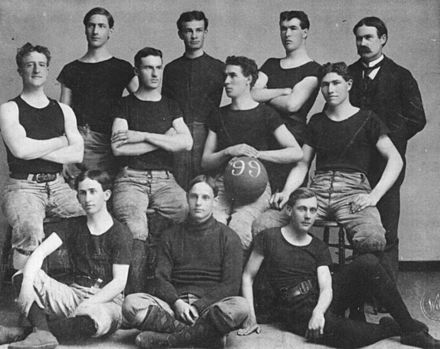
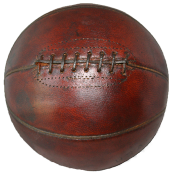

THE BEGINNING 📌

Kansas University
The 1899 University of Kansas basketball team, with James Naismith at the back, right

Old-style basketball with laces

The Smith College Class 1902 basketball team
The Smith College Class of 1902 basketball team pioneered women's sports, breaking barriers in a male-dominated era.
🎥